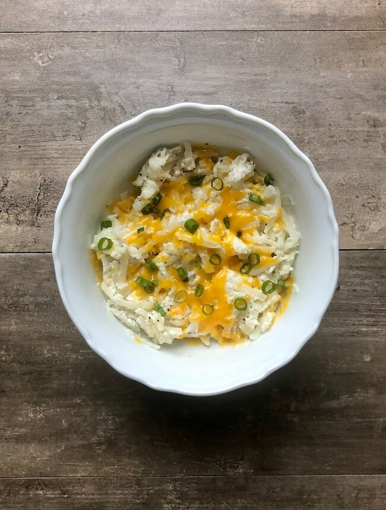

5 Minute Hash brown Breakfast Bowl
5 MINUTE HASH BROWN BREAKFAST BOWL

A quick breakfast bowl made in the microwave from frozen hash browns, egg whites, greek yogurt and cheese. Add peppers and onions for extra flavor.
Prep time: 2 Minutes;
Cook time: 3 Minutes; Per serving (Makes 1): 188 calories, 18g C, 22g P, 3g F.
Ingredients
- 1/2 cup (120 g) 120g egg whites
- (100 g) ~1.5 cups 100g frozen shredded hash browns
- (50 g) ~1/4 cup 50g plain non fat Greek yogurt
- 1 tbsp (10 g) 10g cheese
- 1 tsp (2 g) 2g Green onions
- Salt and pepper to taste
Instructions
- Add the frozen hash browns and eggs to a bowl. Microwave in 1 minute intervals and stir until eggs have cooked.
- Add in the yogurt, salt, pepper and stir. Add the cheese and microwave an additional 30 seconds or until the cheese has melted
- Top with green onions and enjoy.
Go to Homepage